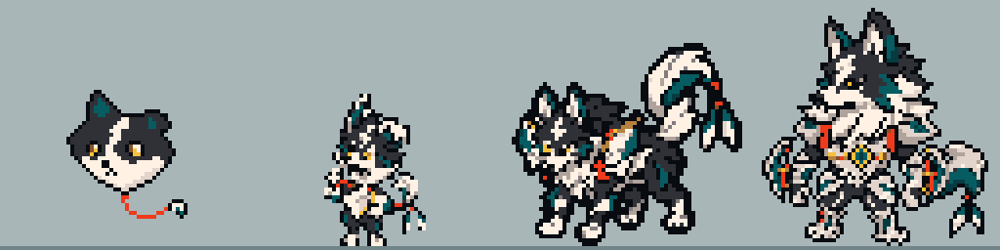

SOULMONSTERS · OVERWORLD 64×64Uma família, uma escala
Pré-evoluções em 3/4. Os quatro estágios usam o mesmo tamanho de célula e ampliação. Farpim flutua; os outros têm apoio em y62.

FarpimPapiscoVelcãoAlvacordo
BebêFarpim
CriançaPapisco
JovemVelcão
AdultoAlvacordo
Idle e walk repetem. Vitória e derrota tocam uma vez; use Repetir todos. As três pré-evoluções têm atlases left/right próprios; o adulto usa o espelho na visualização. O ritmo e a velocidade ainda precisam de calibração no jogo.
Validação dos exports · Arquivos e contrato de escala